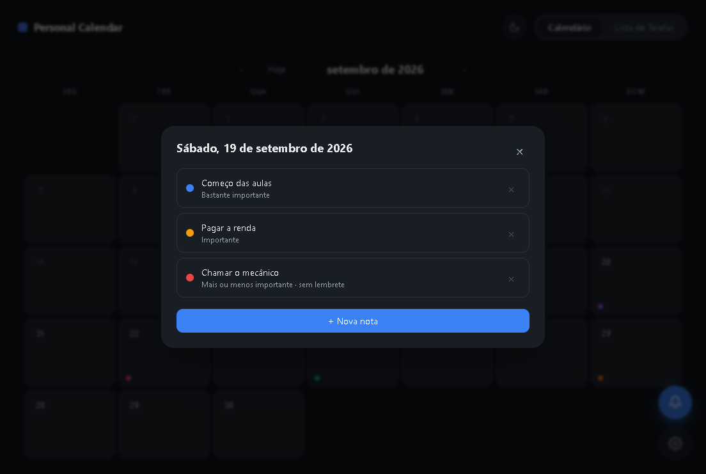

Um calendário para o teu dia,
sem dar cabo da cabeça.
Anotas uma nota num dia, escolhes a cor, defines o lembrete — e sigues. Tudo guardado só no teu computador. Sem contas, sem nuvem, sem avisos de marketing.
Ficheiro .exe · ~106 MB · instala-se sozinho, sem conta.

Não é uma agenda a mais. É a tua.
Pequeno por fora, a fazer só o que precisa de fazer. Isto é o que acontece todos os dias com o Personal Calendar.
Todo o mês à frente
Os dias cabem todos no ecrã, o de hoje fica destacado e um clique abre as notas do dia. Nada mais.
Notas a cores
Cada nota tem a cor que escolhes. Sem pastas, sem categorias, sem etiquetas — só visão rápida do dia.
Lembretes que a sério aparecem
Popup do Windows no canto do ecrã, com som, mesmo com a janela fechada. A app fica na bandeja e vigia isto por ti.
A importância decide quando avisas
De «só lembrete» a «bastante importante»: o calendário adianta-se 3, 2 ou 1 dia, ou avisa só no próprio dia. Tu escolhes.
Claro e escuro
Um botão muda a app toda — e este site também. A escolha fica guardada, em cada lado, à sua maneira.
Tarefas à parte
Coisas sem data fixa também têm sítio. A lista de tarefas anda consigo, e um toque marca o que já está feito.
Lembretes que respeitam a importância
Cada nota pode avisar-te quando fizer sentido — no próprio dia, ou uns dias antes se for mesmo importante. Também podes desligar o lembrete e deixar a nota quieta.
- Notas em dias passados ficam a cinzento, para o mês não parecer um arquivo.
- App fechada? Ao abrir, avisos com até 24 horas de atraso recuperam-se.
- Cada lembrete dispara uma única vez e desaparece do radar.
| Nível de importância | Quando notifica |
|---|---|
| Só lembrete | No próprio dia |
| Pouco importante | No próprio dia |
| Mais ou menos importante | 1 dia antes + próprio dia |
| Importante | 2 dias antes + próprio dia |
| Bastante importante | 3 dias antes + próprio dia |
Este é o calendário que eu queria ter: discreto, rápido e que guarda tudo só no meu computador. Faço melhorias quando me aborrece a mim — por isso nunca vai ter publicidade nem contas. Se te servir também, que bom.
— quem o faz usar todos os diasDá-lhe a tua cara
Modo claro ou escuro, à escolha. Experimenta aqui — a preferência guarda-se neste dispositivo e, na app, muda-se com um botão.
Instalar em 3 passos
Baixa o instalador
Clica no botão e guarda o .exe em qualquer pasta. Não instala coisas escondidas.
Corre-o e está feito
Dois cliques, o assistente anda sozinho e cria o atalho no Iniciar e no ambiente de trabalho.
Fica perto, discretamente
A app encosta-se à bandeja: fechar a janela não desliga os lembretes. Podes mudar isso nas configurações.
Sem registo, sem internet. Os teus dados ficam no teu computador.